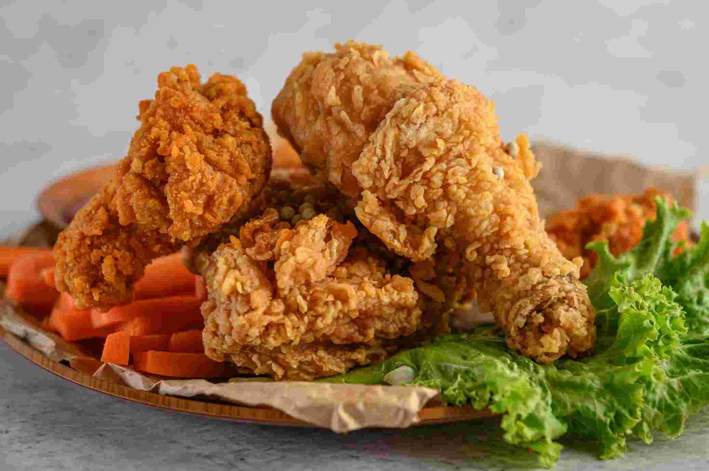

Description
Fried chicken is a crispy, golden-brown delight made by marinating chicken in buttermilk, coating it in seasoned flour, and deep-frying until crunchy outside and juicy inside. Loved worldwide, it's flavorful, satisfying, and often served with sides like fries or coleslaw, making it a favorite comfort food for many.
Ingredients
- 1 kg chicken pieces (bone-in, skin-on recommended)
- 2 cups buttermilk
- 2 cups all-purpose flour
- 1 tsp salt
- 1 tsp black pepper
- 1 tsp paprika
- 1 tsp garlic powder
- 1 tsp onion powder
- 1/2 tsp cayenne pepper
- Oil for deep frying
Steps
- Rinse and pat dry the chicken pieces with paper towels.
- Optionally, lightly score thick pieces to help cook evenly.
- Place chicken in a bowl or ziplock bag.
- Pour in buttermilk to cover all pieces.
- Cover and refrigerate for at least 4 hours (preferably overnight).
- In a large bowl, mix flour, salt, pepper, paprika, garlic powder, onion powder, and cayenne.
- Remove chicken from buttermilk (let excess drip off).
- Dredge each piece thoroughly in the seasoned flour mixture.
- Press flour into the chicken to make a thick, even coating.
- Place coated chicken on a tray and let it rest for 15–20 minutes.
- This helps the coating stick better during frying.
- Pour oil into a deep pot or skillet (enough to submerge chicken halfway).
- Heat oil to 170–180°C (340–360°F). Use a thermometer if possible.
- Carefully place chicken pieces in hot oil (don’t overcrowd).
- Fry in batches for 12–15 minutes, turning occasionally, until golden brown and cooked through.
- Internal temperature should reach 75°C (165°F).
- Transfer fried chicken to a wire rack or paper towel-lined plate.
- Let rest for 5–10 minutes so juices redistribute.
- Serve hot with your favorite dipping sauce, fries, coleslaw, or biscuits.